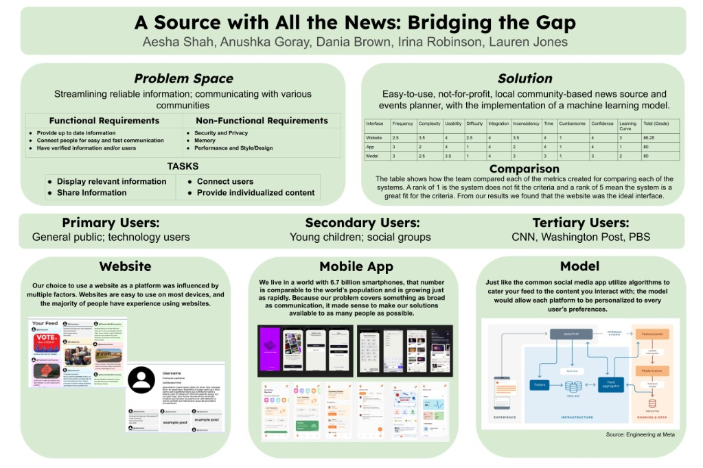

04 / RESEARCH
Research
NLP / ML for Financial Markets
Financial Services Innovation Lab (FSIL)
Georgia Tech College of Engineering, School of Electrical and Computer Engineering, Vertically Integrated
Project (VIP) Team
Role
Lead Undergraduate Researcher
Duration
January 2025 — May 2026
-
—
[Aug – Dec 2025]Developed a natural-language-to-SQL pipeline using compositional multi-stage SQL generation, schema serialization, schema canonicalization, and schema-aware prompting to reliably translate financial queries into grounded SQL across heterogeneous IMF financial statistics datasets; incorporated retrieval-augmented generation (RAG) principles to reduce hallucinations and improve execution accuracy.
- — [Aug – Dec 2025]Built a scalable evaluation harness featuring 110 complexity-controlled query templates covering multi-hop reasoning, cross-indicator & temporal comparisons, and nested SQL to benchmark LLM reasoning quality in natural-language financial analytics applications.
- — [Jan – May 2025]Contributed to the construction of FinLitQA, a 4,300-example benchmark of long-context financial reasoning questions sourced from real credit-card agreements, enabling LLM performance evaluation on compounding, payment rules, and consumer-oriented financial reasoning under Chain-of-Thought and Program-of-Thought prompting.
Related Coursework
VIP 3601
VIP 3602
VIP 4601
VIP 4602
Robot Autonomy & Interactive Learning (RAIL) Lab
Georgia Tech College of Computing, School of Interactive Computing
Role
Undergraduate Research Assistant
Duration
June 2023 — December 2024
- — [Aug – Dec 2024]Utilized Meta Llama 3.2 and advanced NLP techniques to perform contrastive analysis and provide explanations for multi-agent robotic systems (e.g., search and rescue, software-dispatch transportation), guiding users in justifying and explaining decisions based on task allocation, scheduling, and motion-planning data.
- — [Jan – May 2024]Programmed HelloRobot's Stretch model using ROS and Python to replicate human movements with precision for assisting daily routine activities (e.g., household chores).
- — [Jun – Aug 2023]Prompt engineered (on GPT-4) and wrote Python scripts to automate the labeling process for 10K+ data records of daily human activity and generate accurate narrations for home sensor readings, reducing analysis time for behavioral research on neurocognitive ability degeneration trends.
Related Coursework
CS 2699
CS 4699
BridgeUP STEM Research Rotation Program
Helen Gurley Brown Foundation & National Center for Women & Information Technology (NCWIT)
Georgia Tech College of Computing
Conducted research rotations under Georgia Tech faculty Dr. Betsy DiSalvo, Dr. Andrea Parker, Dr. Sonia Chernova, and Dr. Rosa Arriaga
Role
Research Scholar
Duration
June 2022 — April 2023
- — Designed mobile application for Alzheimer’s patients and healthcare providers with chat forums and reminders under guidance of Dr. Betsy DiSalvo and Dr. Andrea Parker.
- — Created and presented infographic for personalized, community-based news source including website and mobile app mockup, and model infrastructure under guidance of Dr. Rosa Arriaga.
- — Received certifications in Responsible Conduct of Research and Human Research — Group 2 Social / Behavioral Research Investigators and Key Personnel.
Research Infographic — Dr. Rosa Arriaga Rotation
